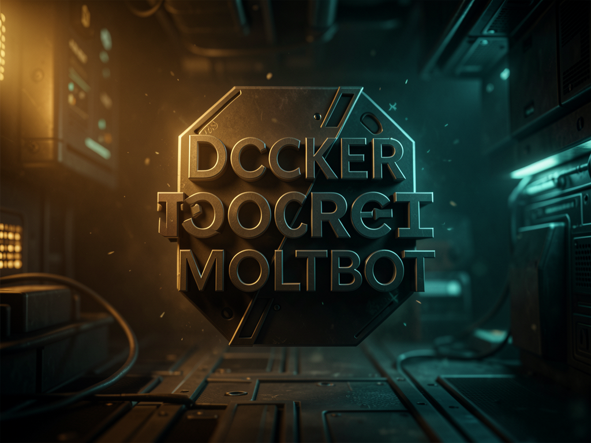

Setup Docker pronto e reforçado em segurança pra rodar o Moltbot — assistente de IA multi-canal (Telegram, WhatsApp, Discord, webchat) que conversa com você, usa ferramentas e roda na sua própria máquina.

O Moltbot (antigo Clawdbot) é um assistente de IA que roda na sua própria máquina, conversa por vários canais e tem acesso a ferramentas reais (shell, busca web, navegador, execução de código). Este repo empacota tudo isso num Docker já hardened, com um comando pra subir.
Usuário não-root, gateway vinculado só ao loopback, autenticação por pareamento, secrets via variáveis de ambiente, permissões 600 no config. Segue o Checklist Top 10 do próprio Moltbot.
Telegram, WhatsApp (QR code), Discord, Slack e webchat — todos compartilham o mesmo agente e podem ser habilitados ao mesmo tempo.
Uma única API key dá acesso a Claude, GPT, Gemini, Llama, DeepSeek e outros. Troca de modelo padrão é só editar o `.env` e reiniciar.
O `entrypoint.sh` faz a configuração inteira sozinho na primeira execução — você só precisa preencher as variáveis de ambiente.
Imagem `node:22-slim`, instala `clawdbot` (runtime atual, em transição pro pacote `moltbot`), roda como usuário não-root `moltbot`.
Gera `~/.clawdbot/clawdbot.json` a partir do template, injeta API keys e tokens via Node.js, define bind `lan` (exigência do Docker) e aplica `chmod 600` no config.
Dentro do container o gateway escuta em `0.0.0.0:18789`; o `docker-compose.yml` restringe o acesso do host a `127.0.0.1:18789` — só a própria máquina alcança.
Docker Compose é a única dependência real — o resto (Node, ffmpeg, Python) já vem dentro da imagem.
Instala tudo com um script oficial.
# instala Docker no Linux curl -fsSL https://get.docker.com | sh
Baixe o instalador oficial e confirme que o Docker está rodando (ícone da baleia 🐳 na bandeja) antes de continuar.
# verifica se o Docker está no ar docker info
O setup usa OpenRouter como gateway único de modelos — precisa de uma key ativa (Claude, GPT, Gemini etc. todos passam por ela).
# pegue sua key em https://openrouter.ai/keys
Os comandos abaixo são os mesmos do README do projeto, na ordem em que devem rodar.
Baixe o setup na sua máquina.
git clone https://github.com/inematds/docker-moltbot.git
cd docker-moltbot
Copie o exemplo e preencha com valores reais — os placeholders não funcionam.
cp .env.example .env nano .env # preencha GATEWAY_AUTH_TOKEN e OPENROUTER_API_KEY
O `GATEWAY_AUTH_TOKEN` protege a API do seu gateway. Cole o resultado no `.env`.
openssl rand -hex 24
Crie a key em openrouter.ai/keys, cole em `OPENROUTER_API_KEY` no `.env` e escolha o modelo padrão.
# .env OPENROUTER_API_KEY=sk-or-v1-... DEFAULT_MODEL=anthropic/claude-sonnet-4-5
A primeira vez leva alguns minutos (baixa Node.js, ffmpeg, Python); depois disso sobe na hora.
docker compose up -d
Abra no navegador e autentique com o `GATEWAY_AUTH_TOKEN` do `.env`.
http://localhost:18789/chat # ou http://localhost:18789/?token=SEU_TOKEN
Confirme que o gateway subiu certo.
docker compose logs -f # acompanha os logs docker compose exec moltbot moltbot status # status do gateway
Comandos úteis pra manutenção do dia a dia.
docker compose exec moltbot moltbot doctor --fix # corrige config automaticamente docker compose exec moltbot moltbot security audit # audita a configuração de segurança
Crie um bot com o @BotFather, cole o token no `.env`, reinicie e aprove o pareamento.
TELEGRAM_BOT_TOKEN=123456:ABC-... # no .env docker compose restart docker exec moltbot clawdbot pairing approve telegram <code>
Login por QR code direto no container.
docker exec -it moltbot clawdbot channels login whatsapp
O repo já roda em produção, mas segue a transição de nome do próprio projeto upstream.